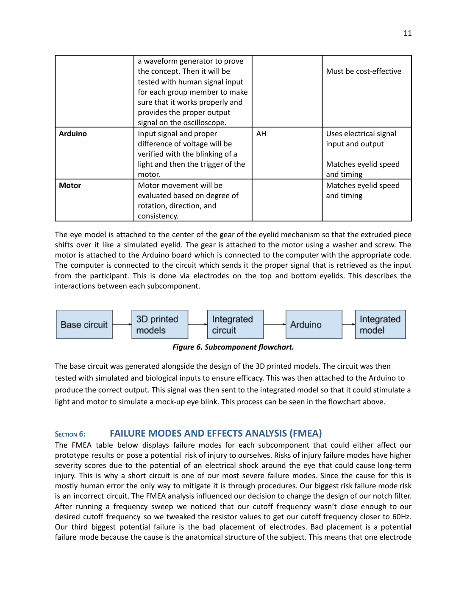
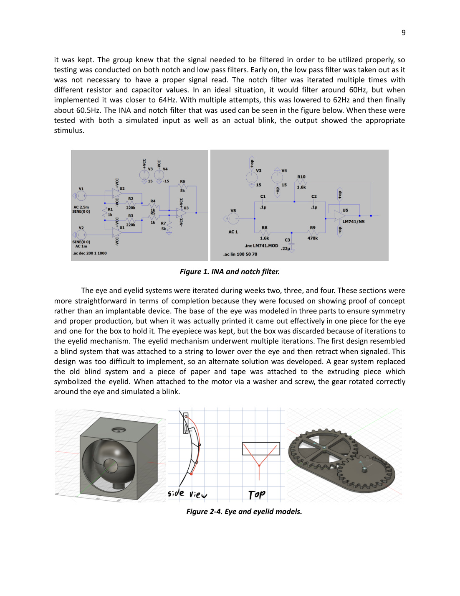
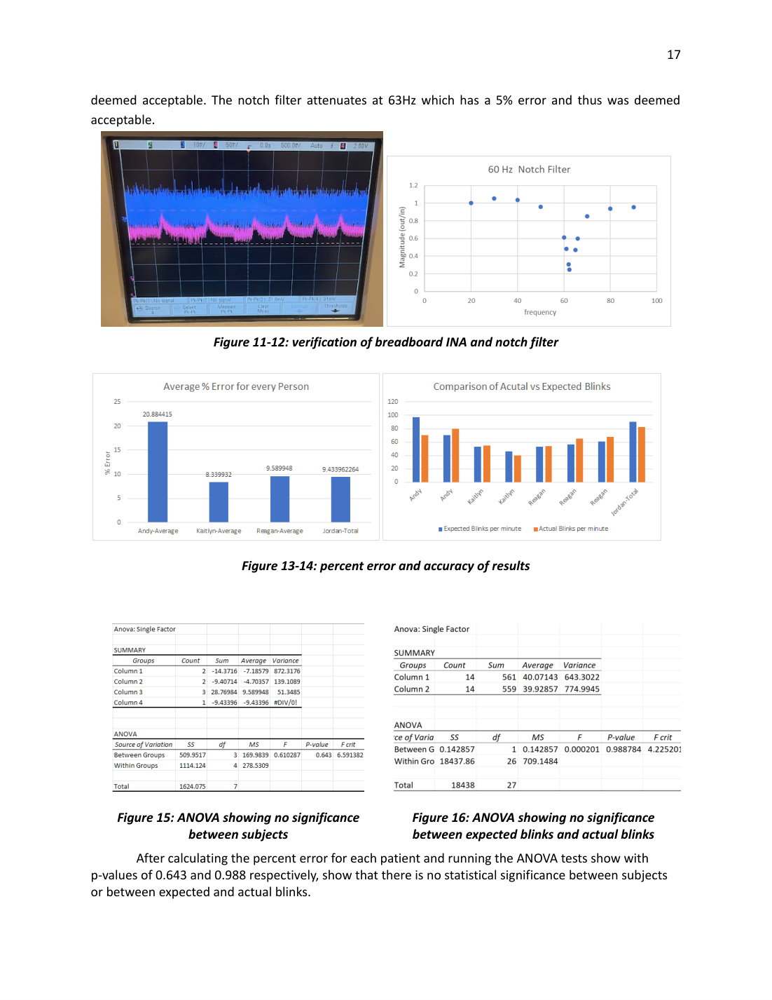
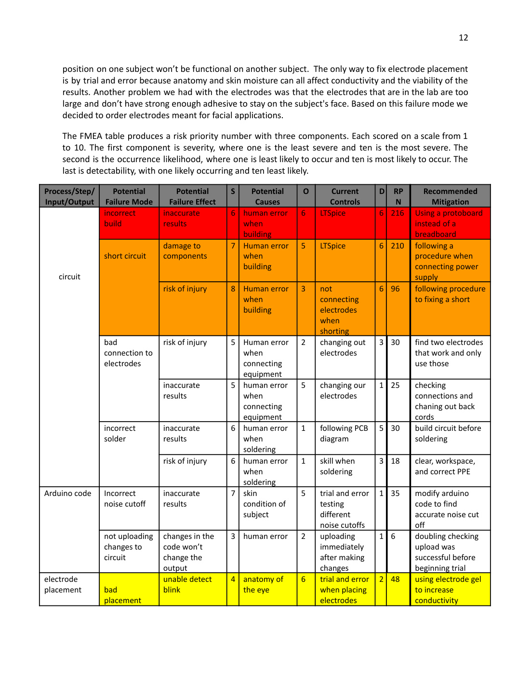
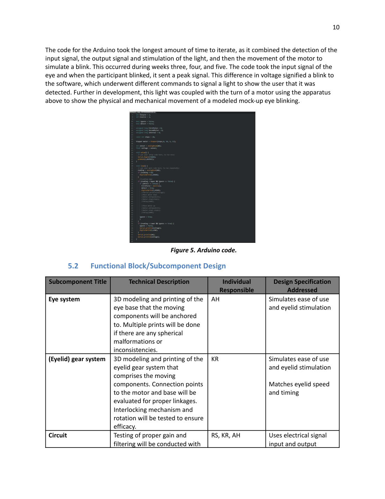
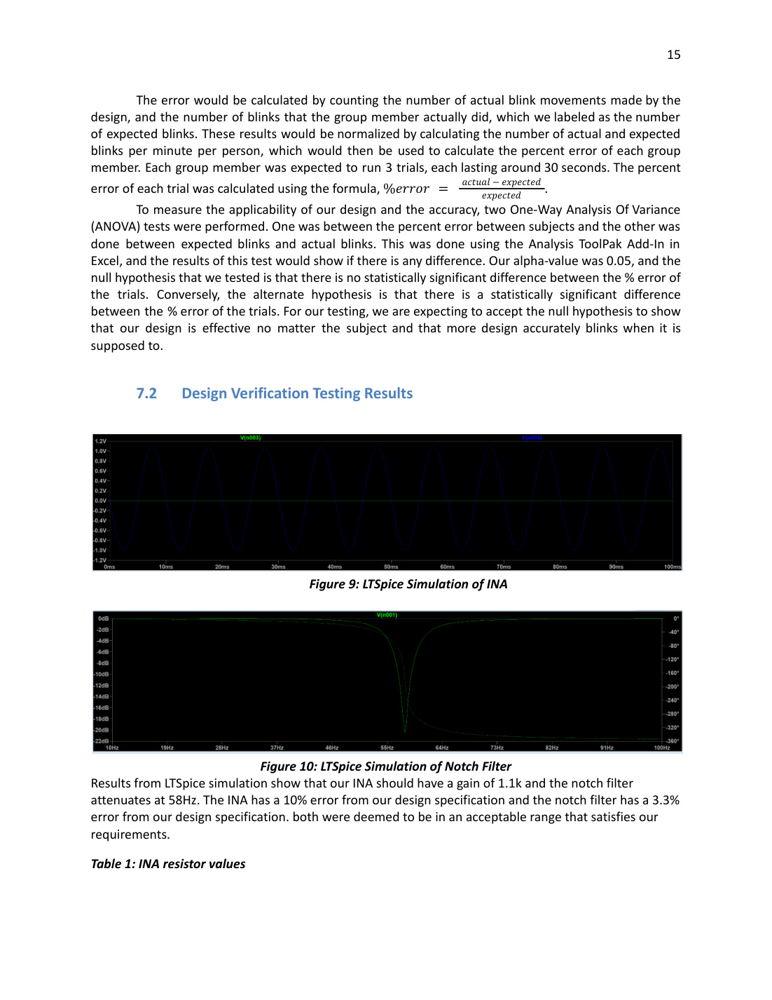
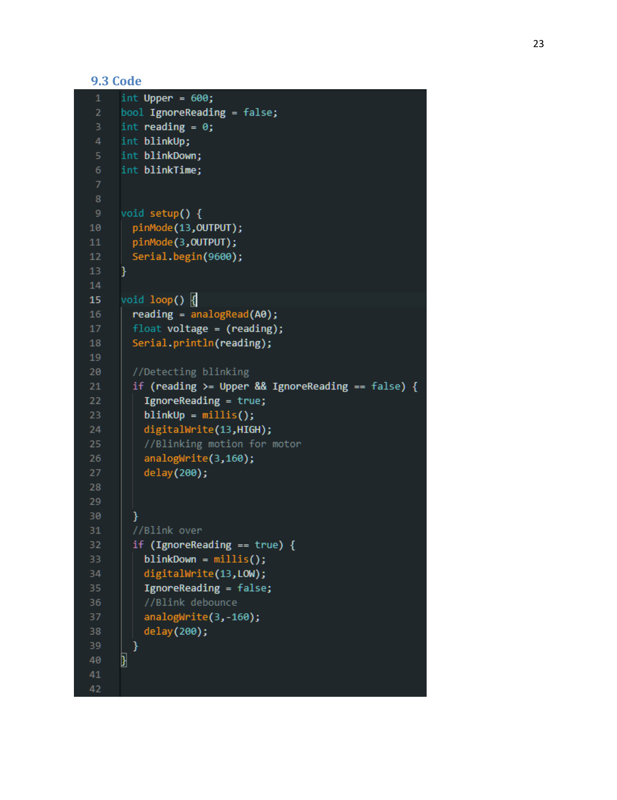

Project Overview
Clinical need and engineering direction
Clinical problem
Bell’s Palsy is an acute facial paralysis condition that can cause facial drooping, difficulty closing the eyelid, dry eye, and reduced quality of life. The team focused on partial eyelid dysfunction because loss of blinking can contribute to corneal irritation, pain, infection risk, and vision-related complications.
Engineering goal
The project explored a system that detects electrical activity from the functioning eyelid, cleans and amplifies the signal, and uses that signal to trigger a simulated blink in a model eye. The concept was framed as a step toward a future assistive technology for synchronized eyelid closure.
Core design idea
Electrodes near the eye captured a blink-related signal. An instrumentation amplifier increased signal amplitude, a notch filter reduced 60 Hz noise, and an Arduino interpreted peaks in the signal to activate a motor connected to a 3D-printed eyelid mechanism.
Project author and undergraduate BME team member
Target notch filter frequency for power-line noise attenuation
Average reported blink-detection percent error
Reported ANOVA p-value comparing expected vs. actual blinks
Design Architecture
From eyelid signal to simulated blink
The device workflow combined biological signal capture, analog signal conditioning, digital interpretation, and mechanical actuation. The project was not a finished medical device; it was an educational proof of concept demonstrating the signal-processing and control logic needed for an eyelid prosthesis model.
- Signal capture: electrodes placed around the functioning eyelid measured blink-associated voltage changes.
- Amplification: an instrumentation amplifier increased the small biological signal so it could be detected reliably.
- Filtering: a notch filter was designed around 60 Hz to reduce electrical noise.
- Microcontroller logic: Arduino code used a threshold-based peak detection method to recognize blinks.
- Actuation: a motor rotated a gear-driven mock eyelid across a 3D-printed eye.


Prototype Components
What the team built
The prototype included an analog front end, breadboard circuit, oscilloscope verification, Arduino microcontroller, motor, and 3D-printed mechanical eye system. The team iterated through multiple circuit values, notch-filter tuning attempts, gear designs, motors, and Arduino code revisions to make the blink simulation respond to the input signal.
Verification & Validation
Testing the circuit, code, and model
Verification plan
The team verified design choices in LTSpice, measured component tolerances with a multimeter, tested the INA and notch filter on a breadboard, and used generated signals before moving to electrode-based blink trials.
Human-subject prototype trials
Group members completed blink trials while the system counted expected blinks and actual simulated blinks. Percent error was calculated for each trial, then ANOVA testing was used to assess whether results varied significantly between subjects or between expected and actual blinks.

Risk Analysis
FMEA-driven design changes
The project included a Failure Modes and Effects Analysis covering circuit errors, short circuits, electrode placement, weak electrode adhesion, Arduino cutoff issues, and motor/gear failures. High-priority risks pushed the team toward clearer procedures, revised notch-filter values, facial electrodes, and additional checks before testing.

Image Gallery
Project images from the Design History File
These images are rendered from the uploaded DHF pages so the GitHub site includes the visual content, tables, diagrams, code screenshot, and prototype photos from the original undergraduate project.



Original Document
Design History Workbook
This website is a public portfolio-style summary of an undergraduate biomedical engineering project. The original DHF PDF is included for transparency and documentation.
Open Source PDF